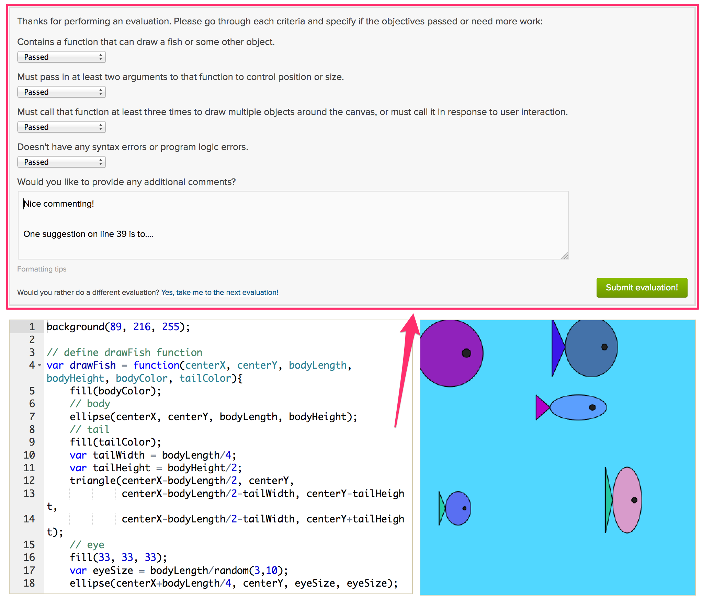
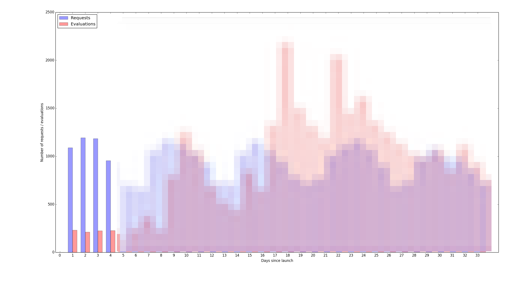
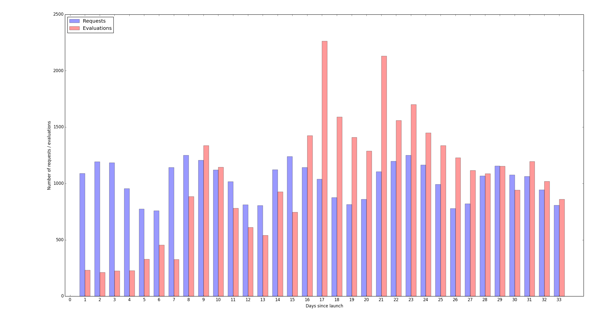
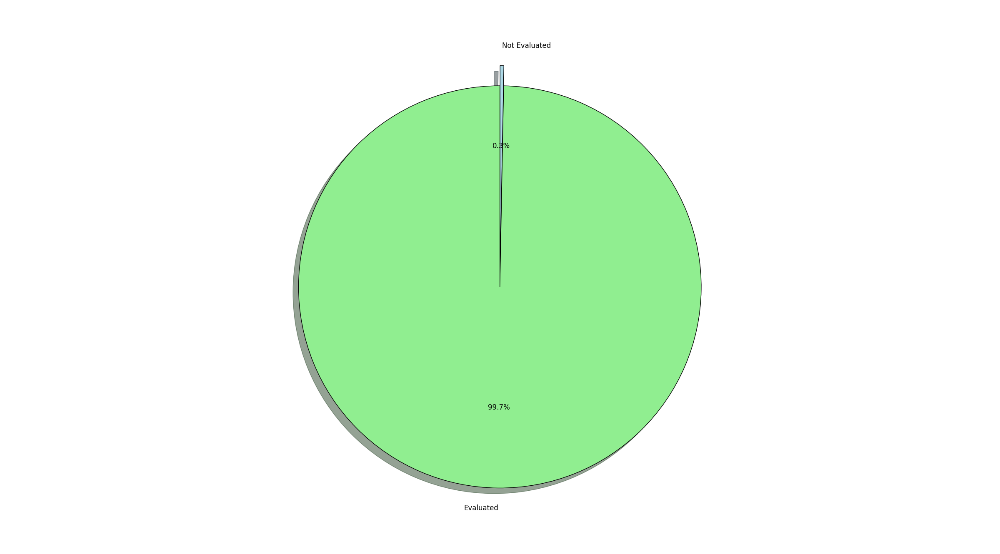
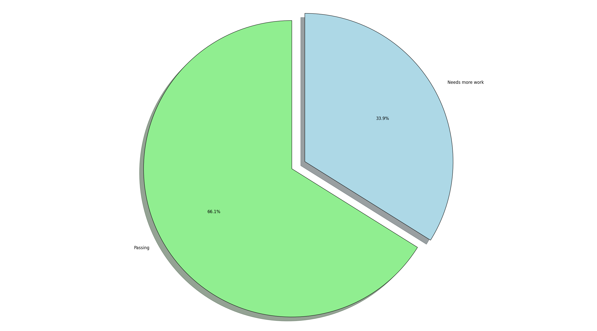
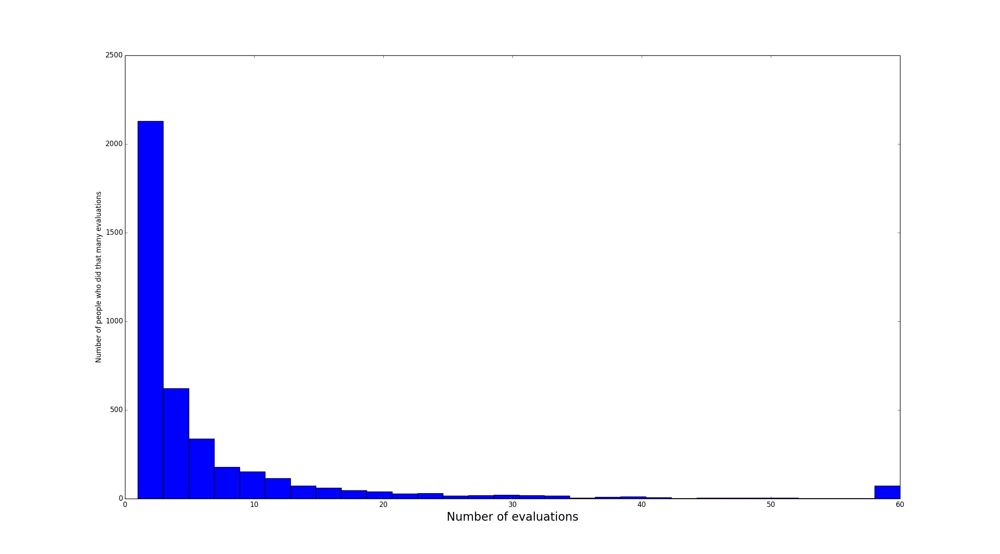

CS Project Evaluations
What are projects?
Projects are free form, objective based opportunities for students to get practice with coding.
Problem with projects:
Projects can't be checked automatically in a way that provides value to the student.
Solution:
Allow peers to evaluate each other with rubric based evaluations!
CS Project Evaluations
How does it look to the person doing the project?
For each project, the user does the project and clicks the button to request an evaluation

CS Project Evaluations
How does it look to the evaluator?
There's a different set of objectives for each project. The user selects pass or fail and enters overall comments.

CS Project Evaluations
What was working:
- No major problems or bugs
- People were requesting evaluations, over 1,000 requests / day!
- The quality of evaluations were very good!
- People seemed to be enjoying both performing and receiving evalutions
CS Project Evaluations
What we had to work at:
Not enough supply of evaluations for the demand of the requests!

CS Project Evaluations
How we fixed it:
Lowered bar for performing evaluations. Added suggestions for performing evaluations yourself at key places.

CS Project Evaluations
How many projects are evaluated today?
Over 99%, people wait about 1-2 days for evaluations on average. This is expected to improve even more.

CS Project Evaluations
How many people pass evaluation?

CS Project Evaluations
What's the distribution of how many evaluations each person does?
- Over 4000 evaluators
- Over 2000 of them do between 1-2 evaluations
- There are about 100 people who have done more than 60 evaluations

Thank You!
We're holding a discussion this Thursday at 12:30pm to talk about peer review at KA and for further questions.
/